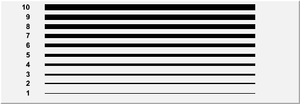
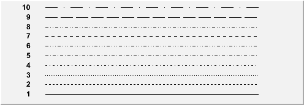
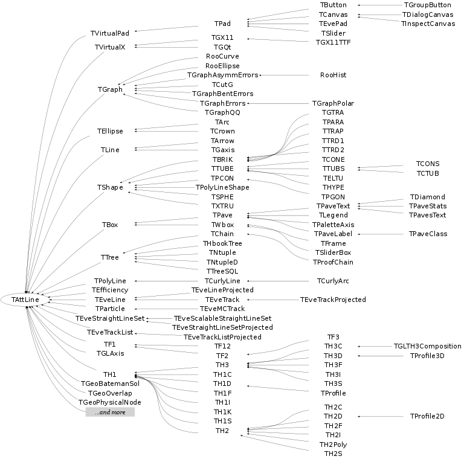

class TAttLine
Line Attributes class
Line attributes
Line attributes are:Line Color
The line color is a color index (integer) pointing in the ROOT color table. The line color of any class inheriting from TAttLine can be changed using the method SetLineColor and retrieved using the method GetLineColor. The following table shows the first 50 default colors.
Line Width
The line width is expressed in pixel units. The line width of any class inheriting from TAttLine can be changed using the method SetLineWidth and retrieved using the method GetLineWidth. The following picture shows the line widths from 1 to 10 pixels.{kind=link}

Line Style
Line styles are identified via integer numbers. The line style of any class inheriting from TAttLine can be changed using the method SetLineStyle and retrieved using the method GetLineStyle.The first 10 line styles are predefined as shown on the following picture:
{kind=link}

Additional line styles can be defined using TStyle::SetLineStyleString.
For example the line style number 11 can be defined as follow:
gStyle->SetLineStyleString(11,"400 200");Existing line styles (1 to 10) can be redefined using the same method.
Function Members (Methods)
public:
| TAttLine() | |
| TAttLine(const TAttLine&) | |
| TAttLine(Color_t lcolor, Style_t lstyle, Width_t lwidth) | |
| virtual | ~TAttLine() |
| static TClass* | Class() |
| void | Copy(TAttLine& attline) const |
| Int_t | DistancetoLine(Int_t px, Int_t py, Double_t xp1, Double_t yp1, Double_t xp2, Double_t yp2) |
| virtual Color_t | GetLineColor() const |
| virtual Style_t | GetLineStyle() const |
| virtual Width_t | GetLineWidth() const |
| virtual TClass* | IsA() const |
| virtual void | Modify() |
| TAttLine& | operator=(const TAttLine&) |
| virtual void | ResetAttLine(Option_t* option = "") |
| virtual void | SaveLineAttributes(ostream& out, const char* name, Int_t coldef = 1, Int_t stydef = 1, Int_t widdef = 1) |
| virtual void | SetLineAttributes()MENU |
| virtual void | SetLineColor(Color_t lcolor) |
| virtual void | SetLineStyle(Style_t lstyle) |
| virtual void | SetLineWidth(Width_t lwidth) |
| virtual void | ShowMembers(TMemberInspector& insp) |
| virtual void | Streamer(TBuffer& b) |
| void | StreamerNVirtual(TBuffer& b) |
Class Charts
{kind=link}
{kind=link}
{kind=link}
{kind=link}

Function documentation
TAttLine(Color_t lcolor, Style_t lstyle, Width_t lwidth)
AttLine normal constructor.
Line attributes are taking from the argument list
color : must be one of the valid color index
style : 1=solid, 2=dash, 3=dash-dot, 4=dot-dot. New styles can be
defined using TStyle::SetLineStyleString.
width : expressed in pixel units
Int_t DistancetoLine(Int_t px, Int_t py, Double_t xp1, Double_t yp1, Double_t xp2, Double_t yp2)
Compute distance from point px,py to a line.
Compute the closest distance of approach from point px,py to this line.
The distance is computed in pixels units.
Algorithm:
A(x1,y1) P B(x2,y2)
-----------------+------------------------------
|
|
|
|
M(x,y)
Let us call a = distance AM A=a**2
b = distance BM B=b**2
c = distance AB C=c**2
d = distance PM D=d**2
u = distance AP U=u**2
v = distance BP V=v**2 c = u + v
D = A - U
D = B - V = B -(c-u)**2
==> u = (A -B +C)/2c
void SaveLineAttributes(ostream& out, const char* name, Int_t coldef = 1, Int_t stydef = 1, Int_t widdef = 1)
Save line attributes as C++ statement(s) on output stream out.
TAttLine()